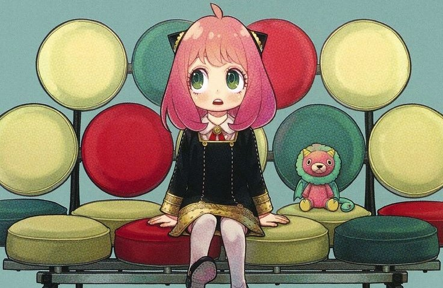

Loid Forger
"Twilight"
Edad: 27 años
Ocupación: Espía
Misión: Operación Strix
Psiquiatra de profesión, espía de corazón. Creador de la familia Forger para la misión de la paz mundial.
Maestro del disfraz
Combatiente élite
Estratega

Anya Forger
"Proyecto 007"
Edad: 6 años
Ocupación: Estudiante
Escuela: Academia Eden
¡Waku waku! Pequeña telepática que puede leer mentes. Adora cacahuates y Spy Wars.
Telepatía
Estudiante
Cazadora de estrellas
Yor Forger
"Thorn Princess"
Edad: 27 años
Ocupación: Asesina
Agencia: Ciudad Jardín
Asesina profesional que se casó con Loid para mantener su cobertura. Excelente cocinera... casi siempre.
Combate mortal
Sigilo
Fuerza sobrehumana